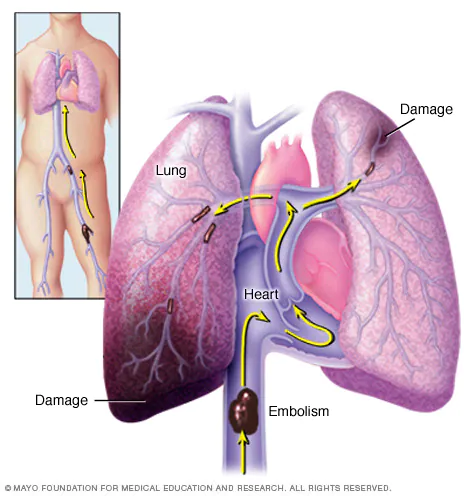
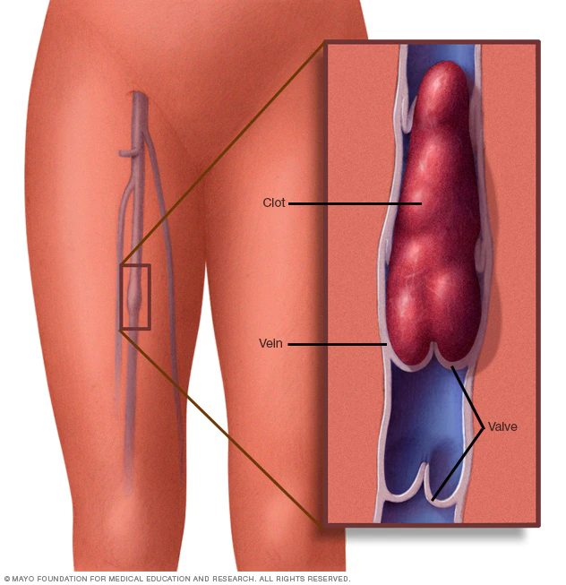

EMBOLIA PULMONAR
Descripción general
Embolia pulmonar

La embolia pulmonar se produce por un coágulo de sangre que obstruye y detiene el flujo de sangre hacia una arteria en los pulmones. En la mayoría de los casos, el coágulo de sangre comienza en una vena profunda de la pierna y se desplaza hasta el pulmón. En raras ocasiones, el coágulo se forma en una vena de otra parte del cuerpo. Cuando se forma un coágulo de sangre en una o más de las venas profundas del cuerpo, se denomina trombosis venosa profunda. Debido a que uno o más coágulos obstruyen el flujo de sangre a los pulmones, la embolia pulmonar puede ser mortal. Sin embargo, el tratamiento rápido reduce en gran medida el riesgo de muerte. Tomar medidas para prevenir la formación de coágulos de sangre en las piernas te ayudará a protegerte contra la embolia pulmonar.
Síntomas
Los síntomas de la embolia pulmonar pueden variar mucho, en función de la extensión comprometida del pulmón, del tamaño de los coágulos y de si tienes una enfermedad cardíaca o pulmonar subyacente. Los síntomas comunes incluyen los siguientes:
- Falta de aire. Este síntoma suele aparecer repentinamente. La dificultad para respirar sucede incluso en estado de reposo y empeora con la actividad física.
- Dolor en el pecho. Es posible que te sientas como si tuvieras un ataque cardíaco. El dolor suele ser agudo y se siente cuando respiras profundo, lo que puede impedirte hacerlo. Es posible que también lo sientas cuando toses, te inclinas hacia adelante o te agachas.
- Desmayo. Si la frecuencia cardíaca o la presión arterial disminuyen de repente, puedes desmayarte. Esto se llama síncope.
Otros síntomas que pueden ocurrir en la embolia pulmonar incluyen los siguientes:
- Tos posiblemente acompañada de mucosidad con sangre o con vetas de sangre
- Latidos del corazón rápidos o irregulares
- Sensación de desvanecimiento o mareos
- Hiperhidrosis
- Fiebre
- Dolor o hinchazón en la pierna, o ambos, por lo general detrás de la parte inferior de la pierna
- Piel húmeda o descolorida (cianosis)
Cúando debes consultar a un médico
La embolia pulmonar puede ser mortal. Busca atención médica urgente si tienes falta de aire inexplicable, te duele el pecho o te desmayas.
Causas
Una embolia pulmonar se produce cuando una acumulación de material, en la mayoría de los casos un coágulo sanguíneo, se atasca en una arteria de los pulmones y bloquea el flujo sanguíneo. Los coágulos sanguíneos suelen provenir de las venas profundas de las piernas, una afección conocida como trombosis venosa profunda. En muchos casos, los coágulos son múltiples. Las partes del pulmón que se nutren de cada arteria obstruida no pueden recibir sangre y pueden morir, lo que se conoce como infarto pulmonar. Esto hace que sea más difícil para los pulmones suministrar oxígeno al resto del cuerpo. Ocasionalmente, las obstrucciones en los vasos sanguíneos se producen por sustancias distintas a los coágulos sanguíneos, como las siguientes:
- Grasa del interior de un hueso largo roto
- Parte de un tumor
- Burbujas de aire
Factores de riesgo
Coágulo de sangre en una vena de la pierna

Aunque cualquier persona puede tener coágulos de sangre que provoquen una embolia pulmonar, hay ciertos factores que pueden aumentar el riesgo.
Antecedentes de coágulos sanguíneos
Corres un mayor riesgo si tú o alguno de tus parientes consanguíneos, como tu padre, tu madre o un hermano, tuvo antes coágulos sanguíneos venosos o embolia pulmonar.
Enfermedades y tratamientos
Algunas enfermedades y tratamientos te ponen en riesgo, por ejemplo:
- Enfermedades cardíacas. Las enfermedades cardíacas y de los vasos sanguíneos, específicamente la insuficiencia cardíaca, hacen más probable la formación de coágulos.
- Cáncer. Ciertos tipos de cáncer (especialmente los de cerebro, ovario, páncreas, colon, estómago, pulmón y riñón, y los que se han diseminado) pueden aumentar el riesgo de coágulos sanguíneos. Este riesgo aumenta aún más con la quimioterapia. El riesgo de que se formen coágulos también es más alto si tienes antecedentes familiares o personales de cáncer de mama y tomas tamoxifeno o raloxifeno (Evista).
- Cirugía. La cirugía es una de las principales causas de los problemas de coágulos sanguíneos. Por esta razón, se pueden administrar medicamentos para prevenir coágulos antes y después de una cirugía mayor, como la de reemplazo de articulaciones.
- Trastornos que afectan la coagulación. Algunos trastornos hereditarios afectan la sangre y la hacen más propensa a coagularse. Otros trastornos médicos, como la enfermedad renal, también pueden aumentar el riesgo de coágulos sanguíneos.
- Enfermedad por coronavirus 2019 (COVID-19). Las personas con síntomas graves de la COVID-19 presentan un mayor riesgo de embolia pulmonar.
Períodos prolongados de inactividad
Es más probable que se formen coágulos de sangre durante períodos de inactividad más largos de lo habitual, como los siguientes:
- Reposo en cama. Tener que hacer reposo en cama durante un período prolongado después de una cirugía, un ataque cardíaco, una fractura de pierna, un traumatismo o cualquier enfermedad grave te hace más propenso a que se formen coágulos de sangre. Cuando las piernas están en reposo durante mucho tiempo, el flujo de sangre por los vasos sanguíneos se vuelve más lento y se puede acumular sangre en las piernas. En ocasiones, esto genera la formación de coágulos de sangre.
- Viajes largos. Estar sentado en una posición con poco espacio durante largos viajes en avión o automóvil hace que el flujo de sangre en las piernas sea más lento, lo que aumenta el riesgo de que se formen coágulos.
Otros factores de riesgo
- Fumar. Por razones que no se comprenden bien, el consumo de tabaco aumenta el riesgo de coágulos sanguíneos en algunas personas, especialmente en aquellas que tienen otros factores de riesgo.
- Sobrepeso. El exceso de peso aumenta el riesgo de coágulos sanguíneos, especialmente en personas con otros factores de riesgo.
- Suplemento de estrógeno. El estrógeno de las píldoras anticonceptivas y de la terapia de reemplazo hormonal puede aumentar los factores de coagulación de la sangre, especialmente para las personas fumadoras o con sobrepeso.
- Embarazo. La presión del peso de un bebé sobre las venas de la pelvis puede hacer más lento el regreso de la sangre desde las piernas. Es más probable que se formen coágulos cuando la sangre se acumula o fluye más lentamente.
Complicaciones
La embolia pulmonar puede ser mortal. Alrededor de un tercio de las personas con embolia pulmonar no diagnosticada y no tratada no sobreviven. Sin embargo, cuando la afección se diagnostica y se trata con prontitud, esa cifra disminuye drásticamente. Las embolias pulmonares también pueden conducir a hipertensión pulmonar, una afección en la que la presión arterial en los pulmones y en el lado derecho del corazón es demasiado alta. Cuando hay arterias obstruidas dentro de los pulmones, el corazón debe trabajar más para bombear la sangre a través de esos vasos, lo que aumenta la presión arterial y termina debilitando el corazón. En raras ocasiones, en los pulmones permanecen pequeños coágulos llamados émbolos y, con el tiempo, se forman cicatrices en las arterias pulmonares. Esto restringe el flujo de sangre y provoca hipertensión pulmonar crónica.
Prevención
La prevención de coágulos en las venas profundas de las piernas ayudará a prevenir las embolias pulmonares. Por esta razón, la mayoría de los hospitales son exigentes en cuanto a la adopción de medidas para prevenir los coágulos sanguíneos, incluidas las siguientes:
- Anticoagulantes. Estos medicamentos suelen administrarse a personas con riesgo de desarrollar coágulos antes y después de una cirugía y a personas que ingresan en el hospital con determinadas enfermedades, como ataque cardíaco, accidente cerebrovascular o complicaciones a causa del cáncer.
- Medias de compresión. Las medias de compresión aprietan constantemente las piernas, lo que ayuda a las venas y los músculos de las piernas a hacer circular la sangre con mayor eficiencia. Son una forma segura, sencilla y económica de evitar que la sangre se acumule en las piernas durante y después de una cirugía.
- Elevación de las piernas. Elevar las piernas cuando sea posible y durante la noche puede ser muy eficaz. Levanta la parte inferior de tu cama de 4 a 6 pulgadas (10 a 15 cm) con bloques o libros.
- Actividad física. Moverse tan pronto como sea posible después de la cirugía puede ayudar a prevenir la embolia pulmonar y acelerar la recuperación en general. Esta es una de las principales razones por las que el personal de enfermería podría animarte a que te levantes, incluso el día de la cirugía, y camines a pesar del dolor en el lugar de la incisión quirúrgica.
- Compresión neumática. Este tratamiento utiliza manguitos a la altura del muslo o de la pantorrilla que se inflan automáticamente con aire y se desinflan cada pocos minutos. De este modo, se masajean y comprimen las venas de las piernas y se mejora el flujo sanguíneo.
Prevención en los viajes
El riesgo de que se formen coágulos sanguíneos durante los viajes es bajo, pero aumenta a medida que haces más viajes de larga distancia. Si tienes factores de riesgo de coágulos sanguíneos y te preocupa viajar, habla con el proveedor de atención médica. El proveedor de atención médica podría sugerirte lo siguiente para prevenir la formación de coágulos sanguíneos durante los viajes:
- Bebe mucho líquido. El agua es el mejor líquido para prevenir la deshidratación, que puede influir en el desarrollo de coágulos sanguíneos. Evita el alcohol, ya que contribuye a la pérdida de líquidos.
- Ponte de pie. Camina por la cabina del avión una vez cada hora aproximadamente. Si viajas en automóvil, haz paradas frecuentes para que puedas caminar. Dobla las rodillas varias veces.
- Muévete en tu asiento. Inclínate, haz movimientos circulares con los tobillos y mueve los dedos de los pies hacia arriba y hacia abajo cada 15 a 30 minutos.
- Usa medias de compresión. El proveedor de atención médica puede recomendártelas para ayudar a mejorar la circulación y el movimiento de líquido en las piernas. Las medias de compresión están disponibles en una gama de modernos colores y texturas. También hay dispositivos, llamados calzadores de medias, para ayudarte a colocártelas.